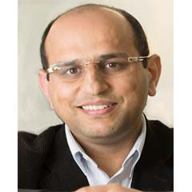

Towards Privacy-Preserving Remote eHealthcare Monitoring with Reverse Skyline Query
|
Abstract: With the flourish of Wireless Body Area Network (WBAN), the online medical monitoring system has attracted extensive attention. Meanwhile, due to the limited resources, the hospital tends to outsource the medical services to the cloud and requires the patients' data to be encrypted before uploading. It is bound to raise a challenge in data availability, e.g., the reverse skyline query that is widely used in monitoring systems. In this work, we propose a privacy-preserving online medical monitoring system, in which the cloud can answer the reverse skyline query over encrypted data and return the monitored data of high-risk patients to a doctor. To achieve this goal, we first design four secure protocols that can ensure the security of operands while minimizing the communication costs between two cloud servers. Based on these privacy-preserving protocols, we propose two privacy-preserving reverse skyline query schemes that can be used in the monitoring system. Security analysis shows that our proposed scheme is indeed privacy-preserving, and performance evaluations also demonstrate the efficiency of our scheme in terms of computation and communication.
|
Dr. Rongxing Lu, IEEE Fellow, University Research Scholar
Associate Professor
Faculty of Computer Science
University of New Brunswick
Fredericton, NB, Canada E3B 5A3
Email: RLU1@unb.ca
Homepage: http://www.cs.unb.ca/~rlu1/
|
Brief Bio: Rongxing Lu is a University Research Scholar, an associate professor at the Faculty of Computer Science (FCS), University of New Brunswick (UNB), Canada. Before that, he worked as an assistant professor at the School of Electrical and Electronic Engineering, Nanyang Technological University (NTU), Singapore from April 2013 to August 2016. Rongxing Lu worked as a Postdoctoral Fellow at the University of Waterloo from May 2012 to April 2013. He was awarded the most prestigious “Governor General’s Gold Medal”, when he received his PhD degree from the Department of Electrical & Computer Engineering, University of Waterloo, Canada, in 2012; and won the 8th IEEE Communications Society (ComSoc) Asia Pacific (AP) Outstanding Young Researcher Award, in 2013. Dr. Lu is an IEEE Fellow. His research interests include applied cryptography, privacy enhancing technologies, and IoT-Big Data security and privacy. He has published extensively in his areas of expertise (with citation 24,400+ and H-index 78 from Google Scholar as of October 2021), and was the recipient of 9 best (student) paper awards from some reputable journals and conferences. Currently, Dr. Lu serves as the Vice-Chair (Conferences) of IEEE ComSoc CIS-TC (Communications and Information Security Technical Committee), and the founding Co-chair of IEEE TEMS Blockchain and Distributed Ledgers Technologies Technical Committee (BDLT-TC). Dr. Lu is the Winner of 2016-17 Excellence in Teaching Award, FCS, UNB.
|
Towards a blockchain-based healthcare information system
|
Abstract: Healthcare information systems are the next big application area for Blockchain technology. However, straightforward extensions of existing digital cryptocurrency systems such as Bitcoin and Ethereum results in systems that are unsuitable for the stringent requirements posed by healthcare systems. These include the need for data owners to explicitly grant or revoke authorizations for other actors to access healthcare data. Furthermore, all accesses, successful or not, should be recorded on the blockchain as separate transactions, thus ensuring transparency and privacy protection. After reviewing those requirements in some detail, we describe an architecture for a blockchain-based healthcare information system in which block validation is performed through collective signatures initiated by a designated leader and executed by a pool of witnesses, while owner’s authorizations use a smart-contract based approach. Finally, we describe the setup in which different kinds of transactions are grouped into categories that are validated by orderer quorums of different size, thus allowing for flexible, geographic area-based transaction and block validation.
|
Professor Vojislav B. Mišić
Department of Computer Science
Ryerson University
Toronto, Ontario, Canada
|
Brief Bio: Vojislav B. Mišić is Professor of Computer Science at Ryerson University in Toronto, Ontario, Canada. His research interests include performance evaluation of wireless networks and systems and software engineering. He has published more than 120 papers in archival journals and over 200 conference papers on those topics; he has also authored or co-authored five books and more than 20 book chapters, and co-edited two books. He serves on the editorial boards of IEEE Transactions on Network Science and Engineering, Ad hoc Networks, Peer-to-Peer Networks and Applications, and International Journal of Parallel, Emergent and Distributed Systems. He is a Senior Member of IEEE and member of ACM.
|
E-skin: From robots to humans
|
Abstract: Inspired from human skin, the electronic skin (e-skin) technology is being explored to provide tactile feedback in robotics and prosthetics. In this regard, a wide range of technologies have been developed, including various types of soft and stiff sensors and flexible electronics. These advances have also opened new applications fore-skin, particularly in the field of health monitoring and rehabilitation.For example, in conformal contact with body parts, the e-skin offers non-invasive means to monitor key physiological parameters or the chronic diseases. This talk will cover such healthcare advances in enabled by e-skin technology.
|

Professor Ravinder Dahiya, IEEE Fellow
Professor of Electronics and Nanoengineering and EPSRC Research Fellow,
James Watt School of Engineering
University of Glasgow, UK
|
Brief Bio: Ravinder Dahiya is Professor of Electronics and Nanoengineering and EPSRC Research Fellow in the James Watt School of Engineering at University of Glasgow. His group (Bendable Electronics and Sensing Technologies (BEST) research group) conducts fundamental research in flexible printed electronics, electronic skin, and their application in robotics, prosthetics, and wearables. Prof. Dahiya has published about 400 research articles, 7 books, and 15 submitted/granted patents and disclosures. He has given more than 160 invited/plenary talks and has led and contributed to many international projects.
Prof. Dahiya is President-Elect of IEEE Sensors Council. He is the Distinguished Lecturer of IEEE Sensors Council and the Founding Editor-in-Chief of IEEE Journal on Flexible Electronics (J-Flex). Prof. Dahiya also started the IEEE International conference on Flexible Printable Sensors and Systems (FLEPS). Prof. Dahiya holds EPSRC Fellowship and received Marie Curie Fellowship and Japanese Monbusho Fellowship in past. He has received several awards, including Technical Achievement award from IEEE Sensors Councils and 11 best journal/conference paper awards as author/co-author. Prof. Dahiya is Fellow of IEEE.
|
Principal Host
 |
Sudip Misra, PhD (Carleton U, Canada), FNAE (India), FNASc (India), FIETE (India), FIET (UK), FRSPH (UK)
ACM Distinguished Scientist
Alexander von Humboldt Fellow (Germany)
IEEE Communications Society Distinguished Lecturer
Professor & INAE Abdul Kalam Technology Innovation National Fellow
Department of Computer Science & Engineering
Indian Institute of Technology
Kharagpur-721302
West Bengal, India
Official Website: https://cse.iitkgp.ac.in/~smisra/
SWAN Group: https://cse.iitkgp.ac.in/~smisra/swan/
|
Co-Hosts
 |
Dr. Arijit Roy
India-France Raman-Charpak Fellow,
Former Senior Research Fellow, Council of Scientific & Industrial Research
Post-Doctoral Research Fellow
Parallel Computing and Optimisation Group
University of Luxembourg, Luxembourg
Website: www.arijitroy.info
|
 |
Dr. Ayan Mondal
Assistant Professor
Department of Computer Science and Engineering
Indian Institute of Technology Indore
Khandwa Road, Simrol, Indore 453552, India
Website: https://ayanmondal.github.io/
|
Webinar Registration
All participants need to pre-register by November 30, 2021 by filling-up the following form: Registration Link
Zoom sign-in details will be shared with the registered participants using the email address provided in the registration form.
The Webinar flyer is available here.